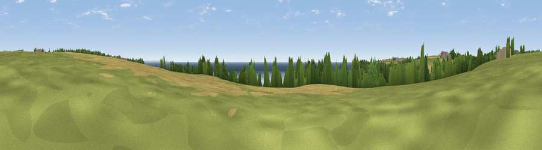

Viewpoint near Treen
#8139 in England · top 33% of its area beats it · near TreenWhere it is
The exact computed spot (SW 41362 23212). Click the marker for map links.
The view, rendered

A 360° render of this exact spot computed from the terrain model, tree cover and land cover — summer colours, afternoon light, calibrated against photographs of famous viewpoints. Real trees, hedges and buildings will differ in detail.
The panorama
Grey silhouette: terrain skyline in each direction (720 bearings, Earth curvature and refraction included). Dashed green: skyline with trees (+15 m) and buildings (+8 m) as obstacles. Blue strip: how far the ground is visible on each bearing.
Where the view opens
Wedge length = distance to the farthest visible ground on that bearing (vegetation-aware). Rings at 10, 25 and 50 km.
What fills the view
48% water · 24% grassland · 21% cropland · 7% woodland
Angular shares of the visible panorama (visual magnitude), not map area. Landscape diversity 0.53 (0–1 Shannon).
Key numbers
More beautiful places nearby
The staircase of upgrades: each row has a higher view potential than everything closer. Driving times are estimates from straight-line distance, calibrated against real road routing — check an actual route before setting out.
| Place | Direction | Drive | Score |
|---|---|---|---|
| Viewpoint near Treen | WNW · 2 km | ~5 min | 67.4 |
| Viewpoint near Lamorna | ENE · 4 km | ~10 min | 70.2 |
| Viewpoint near Lamorna | ENE · 5 km | ~11 min | 73.4 |
| Viewpoint near Bosavern | NNW · 6 km | ~12 min | 82.4 |
| Viewpoint near Morvah | N · 13 km | ~23 min | 83.2 |
| Viewpoint near Porthmeor | N · 13 km | ~23 min | 84.8 |
| Rosewall Hill | NNE · 18 km | ~30 min | 88.0 |
| Viewpoint near Combe Martin | NE · 172 km | ~193 min | 88.9 |
50.05269, -5.61448 · source: screening · position refined by local search. Computed location — check access rights before visiting.